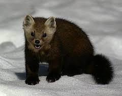
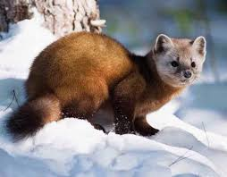
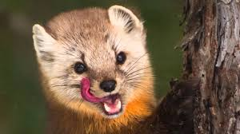
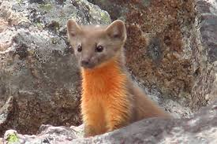
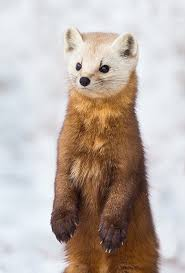
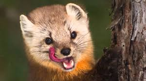
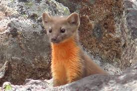
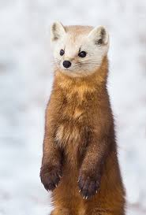
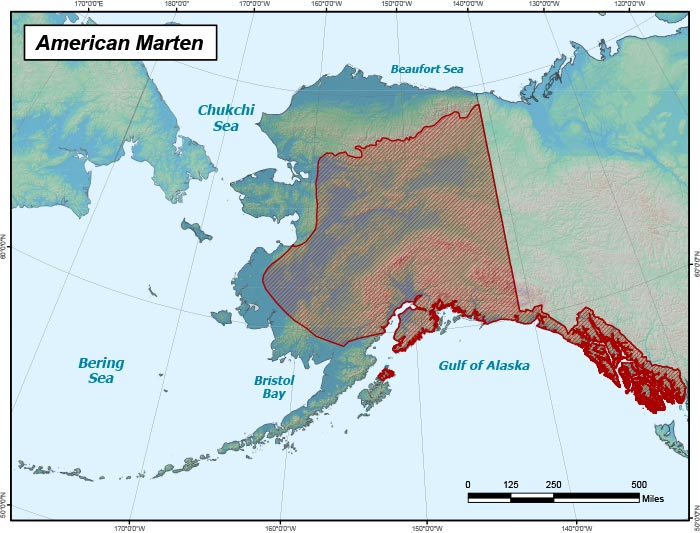

The American Marten - Martes Americana
American martens, Martes americana, are found in the northern reaches of North America. The species is present from Newfoundland and Nova Scotia west to Alaska and south into sections of the rocky mountain range and California. Martens are found sporadically in parts of New York state, Michigan, Minnesota, Maine, and Wisconsin.
  





Habitat
Martes americana is found primarily in mature, northern forests. These animals are closely associated with lodgepole pine, Douglas fir, spruce, and mixed harwood forests. They tend to be found in complex forests, and can occur at all areas where such habitat exists. They den in hollow trees or vacant ground burrows.
Are they endangered?
The cutting of vast areas of mature conifer forests destroyed much of the American marten habitat in the Sierra Nevada. Collection of pelts has reduced populations in many parts of the species range. The destruction of their forest habitat has also led to decreased numbers. In spite of these threats, American martens are not considered endangered.
Fun Facts
- American martens can reach 1.5 to 2.2 feet in length and 1.1 to 3.1 pounds of weight. Males are larger than females.
- Color of the fur depends on the geographic location. It ranges from yellowish and light brown to nearly black. Face is usually grey-colored. Legs and tail are darker than the rest of the body. Throat is covered with creamy or orange-colored fur.
- American martens have triangular head with pointed muzzle, large eyes and cat-like ears. They have slender body, short legs with curved claws and bushy tail.
- American martens are agile climbers and good swimmers, but they spend most of their lives on the ground.
- American martens are nocturnal animals (active during the night).
- American martens are omnivores (they eat plants and meat). Their diet is based on mice, squirrels, hares, small birds, reptiles, insects, fruit and nuts.
- American martens are able to dig tunnels and move through the snow during the winter to find food.